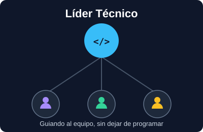

Desde que empecé a programar mis primeras "páginas web" con DreamWeaver cuando no sabia nada, supe que quería dedicarme al desarrollo Web. Mi trabajo de sueños era convertirme en desarrollador de aplicaciones web, diseñando soluciones que ayuden a otras personas a resolver problemas o facilitar sus vidas de alguna manera a través de la tecnología, ya que me gustaba mucho crear cosas, siempre fui mas visual y por eso me gusto más la parte del "FrontEnd". Ahora que lo logré y ya llevo 4 años como desarrollador, mi siguiente meta es crecer hacia un rol de Líder Técnico.
| Paso | Requisito | Descripción |
|---|---|---|
| 1 | Base técnica sólida | Ya cuento con 4 años de experiencia como desarrollador Web FrontEnd, trabajando con Angular y frameworks de CSS. |
| 2 | Mentoría | Empezar a guiar a desarrolladores junior en revisiones de código y dudas técnicas del día a día. |
| 3 | Visión de arquitectura | Aprender a diseñar la estructura completa de un proyecto y no solo resolver tareas puntuales. |
| 4 | Habilidades blandas | Desarrollar comunicación y liderazgo para coordinar al equipo y negociar con otras áreas. |
| 5 | Formación en liderazgo técnico | Buscar cursos o certificaciones enfocados en gestión de equipos técnicos y toma de decisiones de arquitectura. |

Página elaborada para el Reto 2 del módulo Programación web del lado del cliente v1.